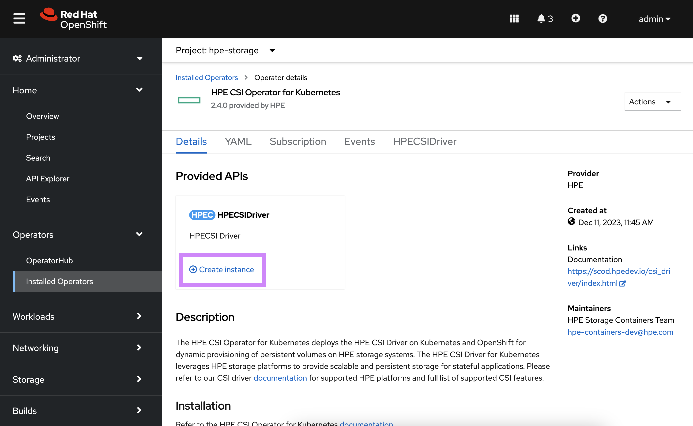

Overview¶
HPE and Red Hat have a long standing partnership to provide jointly supported software, platform and services with the absolute best customer experience in the industry.
Red Hat OpenShift uses open source Kubernetes and various other components to deliver a PaaS experience that benefits both developers and operations. This packaged experience differs slightly on how you would deploy and use the HPE volume drivers and this page serves as the authoritative source for all things HPE primary storage and Red Hat OpenShift.
OpenShift 4¶
Software deployed on OpenShift 4 follows the Operator pattern. CSI drivers are no exception.
Certified combinations¶
Software delivered through the HPE and Red Hat partnership follows a rigorous certification process and only qualify what's listed as "Certified" in the below table.
| Status | Red Hat OpenShift | HPE CSI Operator | Container Storage Providers |
|---|---|---|---|
| Certified | 4.16 EUS2 | 2.5.1 | All |
| Certified | 4.15 | 2.4.1, 2.4.2, 2.5.1 | All |
| Certified | 4.14 EUS2 | 2.4.0, 2.4.1, 2.4.2, 2.5.1 | All |
| Certified | 4.13 | 2.4.0, 2.4.1, 2.4.2 | All |
| Certified | 4.12 EUS2 | 2.3.0, 2.4.0, 2.4.1, 2.4.2 | All |
| EOL1 | 4.11 | 2.3.0 | All |
| EOL1 | 4.10 EUS2 | 2.2.1, 2.3.0 | All |
1 = End of life support per Red Hat OpenShift Life Cycle Policy.
2 = Red Hat OpenShift Extended Update Support.
Check the table above periodically for future releases.
Pointers
- Other combinations may work but will not be supported.
- Both Red Hat Enterprise Linux and Red Hat CoreOS worker nodes are supported.
- Instructions on this page only reflect the current stable version of the HPE CSI Operator and OpenShift.
- OpenShift Virtualization OS images are only supported on
PVCsusing "RWX" withvolumeMode: Block. See below for more details.
Security model¶
By default, OpenShift prevents containers from running as root. Containers are run using an arbitrarily assigned user ID. Due to these security restrictions, containers that run on Docker and Kubernetes might not run successfully on Red Hat OpenShift without modification.
Users deploying applications that require persistent storage (i.e. through the HPE CSI Driver) will need the appropriate permissions and Security Context Constraints (SCC) to be able to request and manage storage through OpenShift. Modifying container security to work with OpenShift is outside the scope of this document.
For more information on OpenShift security, see Managing security context constraints.
Note
If you run into issues writing to persistent volumes provisioned by the HPE CSI Driver under a restricted SCC, add the fsMode: "0770" parameter to the StorageClass with RWO claims or fsMode: "0777" for RWX claims.
Limitations¶
Since the CSI Operator only provides "Basic Install" capabilities. The following limitations apply:
- The
ConfigMap"hpe-linux-config" that controls host configuration is immutable - The NFS Server Provisioner can not be used with Operators deploying
PersistentVolumeClaimsas part of the installation. See #295 on GitHub. - Deploying the NFS Server Provisioner to a
Namespaceother than "hpe-nfs" requires a separate SCC applied to theNamespace. See #nfs_server_provisioner_considerations.
Deployment¶
The HPE CSI Operator for Kubernetes needs to be installed through the interfaces provided by Red Hat. Do not follow the instructions found on OperatorHub.io.
Tip
There's a tutorial available on YouTube accessible through the Video Gallery on how to install and use the HPE CSI Operator on Red Hat OpenShift.
Upgrading¶
In situations where the operator needs to be upgraded, follow the prerequisite steps in the Helm chart on Artifact Hub.
Automatic Updates
Do not under any circumstance enable "Automatic Updates" for the HPE CSI Operator for Kubernetes
Once the steps have been followed for the particular version transition:
- Uninstall the
HPECSIDriverinstance - Delete the "hpecsidrivers.storage.hpe.com"
CRD
:oc delete crd/hpecsidrivers.storage.hpe.com - Uninstall the HPE CSI Operator for Kubernetes
- Proceed to installation through the OpenShift Web Console or OpenShift CLI
- Reapply the SCC to ensure there hasn't been any changes.
Good to know
Deleting the HPECSIDriver instance and uninstalling the CSI Operator does not affect any running workloads, PersistentVolumeClaims, StorageClasses or other API resources created by the CSI Operator. In-flight operations and new requests will be retried once the new HPECSIDriver has been instantiated.
Prerequisites¶
The HPE CSI Driver needs to run in privileged mode and needs access to host ports, host network and should be able to mount hostPath volumes. Hence, before deploying HPE CSI Operator on OpenShift, please create the following SecurityContextConstraints (SCC) to allow the CSI driver to be running with these privileges.
oc new-project hpe-storage --display-name="HPE CSI Driver for Kubernetes"
Important
The rest of this implementation guide assumes the default "hpe-storage" Namespace. If a different Namespace is desired. Update the ServiceAccount Namespace in the SCC below.
Deploy or download the SCC:
oc apply -f https://scod.hpedev.io/partners/redhat_openshift/examples/scc/hpe-csi-scc.yaml
securitycontextconstraints.security.openshift.io/hpe-csi-controller-scc created
securitycontextconstraints.security.openshift.io/hpe-csi-node-scc created
securitycontextconstraints.security.openshift.io/hpe-csi-csp-scc created
securitycontextconstraints.security.openshift.io/hpe-csi-nfs-scc created
OpenShift web console¶
Once the SCC has been applied to the project, login to the OpenShift web console as kube:admin and navigate to Operators -> OperatorHub.
 Search for 'HPE CSI' in the search field and select the non-marketplace version.
Search for 'HPE CSI' in the search field and select the non-marketplace version.
 Click 'Install'.
Click 'Install'.
Note
Latest supported HPE CSI Operator on OpenShift 4.14 is 2.4.2
 Select the Namespace where the SCC was applied, select 'Manual' Update Approval, click 'Install'.
Select the Namespace where the SCC was applied, select 'Manual' Update Approval, click 'Install'.
 Click 'Approve' to finalize installation of the Operator
Click 'Approve' to finalize installation of the Operator
 The HPE CSI Operator is now installed, select 'View Operator'.
The HPE CSI Operator is now installed, select 'View Operator'.
 Click 'Create Instance'.
 Normally, no customizations are needed, scroll all the way down and click 'Create'.
Normally, no customizations are needed, scroll all the way down and click 'Create'.
By navigating to the Developer view, it should now be possible to inspect the CSI driver and Operator topology.

The CSI driver is now ready for use. Next, an HPE storage backend needs to be added along with a StorageClass.
See Caveats below for information on creating StorageClasses in Red Hat OpenShift.
OpenShift CLI¶
This provides an example Operator deployment using oc. If you want to use the web console, proceed to the previous section.
It's assumed the SCC has been applied to the project and have kube:admin privileges. As an example, we'll deploy to the hpe-storage project as described in previous steps.
First, an OperatorGroup needs to be created.
apiVersion: operators.coreos.com/v1
kind: OperatorGroup
metadata:
name: hpe-csi-driver-for-kubernetes
namespace: hpe-storage
spec:
targetNamespaces:
- hpe-storage
Next, create a Subscription to the Operator.
apiVersion: operators.coreos.com/v1alpha1
kind: Subscription
metadata:
name: hpe-csi-operator
namespace: hpe-storage
spec:
channel: stable
installPlanApproval: Manual
name: hpe-csi-operator
source: certified-operators
sourceNamespace: openshift-marketplace
Next, approve the installation.
oc -n hpe-storage patch $(oc get installplans -n hpe-storage -o name) -p '{"spec":{"approved":true}}' --type merge
The Operator will now be installed on the OpenShift cluster. Before instantiating a CSI driver, watch the roll-out of the Operator.
oc rollout status deploy/hpe-csi-driver-operator -n hpe-storage
Waiting for deployment "hpe-csi-driver-operator" rollout to finish: 0 of 1 updated replicas are available...
deployment "hpe-csi-driver-operator" successfully rolled out
The next step is to create a HPECSIDriver object.
# oc apply -f https://scod.hpedev.io/csi_driver/examples/deployment/hpecsidriver-v2.5.1-sample.yaml
apiVersion: storage.hpe.com/v1
kind: HPECSIDriver
metadata:
name: hpecsidriver-sample
spec:
# Default values copied from <project_dir>/helm-charts/hpe-csi-driver/values.yaml
controller:
affinity: {}
labels: {}
nodeSelector: {}
resources:
limits:
cpu: 2000m
memory: 1Gi
requests:
cpu: 100m
memory: 128Mi
tolerations: []
csp:
affinity: {}
labels: {}
nodeSelector: {}
resources:
limits:
cpu: 2000m
memory: 1Gi
requests:
cpu: 100m
memory: 128Mi
tolerations: []
disable:
alletra6000: false
alletra9000: false
alletraStorageMP: false
nimble: false
primera: false
disableHostDeletion: false
disableNodeConfiguration: false
disableNodeConformance: false
disableNodeGetVolumeStats: false
disableNodeMonitor: false
imagePullPolicy: IfNotPresent
images:
csiAttacher: registry.k8s.io/sig-storage/csi-attacher:v4.6.1
csiControllerDriver: quay.io/hpestorage/csi-driver:v2.5.0
csiExtensions: quay.io/hpestorage/csi-extensions:v1.2.7
csiNodeDriver: quay.io/hpestorage/csi-driver:v2.5.0
csiNodeDriverRegistrar: registry.k8s.io/sig-storage/csi-node-driver-registrar:v2.10.1
csiProvisioner: registry.k8s.io/sig-storage/csi-provisioner:v5.0.1
csiResizer: registry.k8s.io/sig-storage/csi-resizer:v1.11.1
csiSnapshotter: registry.k8s.io/sig-storage/csi-snapshotter:v8.0.1
csiVolumeGroupProvisioner: quay.io/hpestorage/volume-group-provisioner:v1.0.6
csiVolumeGroupSnapshotter: quay.io/hpestorage/volume-group-snapshotter:v1.0.6
csiVolumeMutator: quay.io/hpestorage/volume-mutator:v1.3.6
nfsProvisioner: quay.io/hpestorage/nfs-provisioner:v3.0.5
nimbleCSP: quay.io/hpestorage/alletra-6000-and-nimble-csp:v2.5.0
primera3parCSP: quay.io/hpestorage/alletra-9000-primera-and-3par-csp:v2.5.0
iscsi:
chapSecretName: ""
kubeletRootDir: /var/lib/kubelet
logLevel: info
node:
affinity: {}
labels: {}
nodeSelector: {}
resources:
limits:
cpu: 2000m
memory: 1Gi
requests:
cpu: 100m
memory: 128Mi
tolerations: []
# oc apply -f https://scod.hpedev.io/csi_driver/examples/deployment/hpecsidriver-v2.4.2-sample.yaml
apiVersion: storage.hpe.com/v1
kind: HPECSIDriver
metadata:
name: hpecsidriver-sample
spec:
# Default values copied from <project_dir>/helm-charts/hpe-csi-driver/values.yaml
controller:
affinity: {}
labels: {}
nodeSelector: {}
tolerations: []
csp:
affinity: {}
labels: {}
nodeSelector: {}
tolerations: []
disable:
alletra6000: false
alletra9000: false
alletraStorageMP: false
nimble: false
primera: false
disableNodeConfiguration: false
disableNodeConformance: false
disableNodeGetVolumeStats: false
imagePullPolicy: IfNotPresent
iscsi:
chapPassword: ""
chapUser: ""
kubeletRootDir: /var/lib/kubelet/
logLevel: info
node:
affinity: {}
labels: {}
nodeSelector: {}
tolerations: []
registry: quay.io
# oc apply -f https://scod.hpedev.io/csi_driver/examples/deployment/hpecsidriver-v2.4.1-sample.yaml
apiVersion: storage.hpe.com/v1
kind: HPECSIDriver
metadata:
name: hpecsidriver-sample
spec:
# Default values copied from <project_dir>/helm-charts/hpe-csi-driver/values.yaml
controller:
affinity: {}
labels: {}
nodeSelector: {}
tolerations: []
csp:
affinity: {}
labels: {}
nodeSelector: {}
tolerations: []
disable:
alletra6000: false
alletra9000: false
alletraStorageMP: false
nimble: false
primera: false
disableNodeConfiguration: false
disableNodeConformance: false
disableNodeGetVolumeStats: false
imagePullPolicy: IfNotPresent
iscsi:
chapPassword: ""
chapUser: ""
kubeletRootDir: /var/lib/kubelet/
logLevel: info
node:
affinity: {}
labels: {}
nodeSelector: {}
tolerations: []
registry: quay.io
The CSI driver is now ready for use. Next, an HPE storage backend needs to be added along with a StorageClass.
Additional information¶
At this point the CSI driver is managed like any other Operator on Kubernetes and the life-cycle management capabilities may be explored further in the official Red Hat OpenShift documentation.
Uninstall the HPE CSI Operator¶
When uninstalling an operator managed by OLM, a Cluster Admin must decide whether or not to remove the CustomResourceDefinitions (CRD), APIServices, and resources related to these types owned by the operator. By design, when OLM uninstalls an operator it does not remove any of the operator’s owned CRDs, APIServices, or CRs in order to prevent data loss.
Important
Do not modify or remove these CRDs or APIServices if you are upgrading or reinstalling the HPE CSI driver in order to prevent data loss.
The following are CRDs installed by the HPE CSI driver.
hpecsidrivers.storage.hpe.com
hpenodeinfos.storage.hpe.com
hpereplicationdeviceinfos.storage.hpe.com
hpesnapshotgroupinfos.storage.hpe.com
hpevolumegroupinfos.storage.hpe.com
hpevolumeinfos.storage.hpe.com
snapshotgroupclasses.storage.hpe.com
snapshotgroupcontents.storage.hpe.com
snapshotgroups.storage.hpe.com
volumegroupclasses.storage.hpe.com
volumegroupcontents.storage.hpe.com
volumegroups.storage.hpe.com
The following are APIServices installed by the HPE CSI driver.
v1.storage.hpe.com
v2.storage.hpe.com
Please refer to the OLM Lifecycle Manager documentation on how to safely Uninstall your operator.
NFS Server Provisioner Considerations¶
When deploying NFS servers on OpenShift there's currently two things to keep in mind for a successful deployment. Also, be understood with the Limitations and Considerations for the NFS Server Provisioner in general.
Non-standard hpe-nfs Namespace¶
If NFS servers are deployed in a different Namespace than the default "hpe-nfs" by using the "nfsNamespace" StorageClass parameter, the "hpe-csi-nfs-scc" SCC needs to be updated to include the Namespace ServiceAccount.
This example adds "my-namespace" NFS server ServiceAccount to the SCC:
oc patch scc hpe-csi-nfs-scc --type=json -p='[{"op": "add", "path": "/users/-", "value": "system:serviceaccount:my-namespace:hpe-csi-nfs-sa" }]'
Operators Requesting NFS Persistent Volume Claims¶
Object references in OpenShift are not compatible with the NFS Server Provisioner. If a user deploys an Operator of any kind that creates a NFS server backed PVC, the operation will fail. Instead, pre-provision the PVC manually for the Operator instance to use.
Use the ext4 filesystem for NFS servers¶
On certain versions of OpenShift the NFS clients may experience stale NFS file handles like the one below when the NFS server is being restarted.
Error: failed to resolve symlink "/var/lib/kubelet/pods/290ff9e1-cc1e-4d05-b884-0ddcc05a9631/volumes/kubernetes.io~csi/pvc-321cf523-c063-4ce4-97e8-bc1365b8a05b/mount": lstat /var/lib/kubelet/pods/290ff9e1-cc1e-4d05-b884-0ddcc05a9631/volumes/kubernetes.io~csi/pvc-321cf523-c063-4ce4-97e8-bc1365b8a05b/mount: stale NFS file handle
If this problem occurs, use the ext4 filesystem on the backing volumes. The fsType is set in the StorageClass. Example:
...
parameters:
csi.storage.k8s.io/fstype: ext4
...
StorageProfile for OpenShift Virtualization Source PVCs¶
If OpenShift Virtualization is being used and Live Migration is desired for virtual machines PVCs cloned from the "openshift-virtualization-os-images" Namespace, the StorageProfile needs to be updated to "ReadWriteMany".
Info
These steps are not necessary on recent OpenShift EUS (v4.12.11 onwards) releases as the default StorageProfile for "csi.hpe.com" has been corrected upstream.
If the default StorageClass is named "hpe-standard", issue the following command:
oc edit -n openshift-cnv storageprofile hpe-standard
Replace the spec: {} with the following:
spec:
claimPropertySets:
- accessModes:
- ReadWriteMany
volumeMode: Block
Ensure there are no errors. Recreate the OS images:
oc delete pvc -n openshift-virtualization-os-images --all
Inspect the PVCs and ensure they are re-created with "RWX":
oc get pvc -n openshift-virtualization-os-images -w
Hint
The "accessMode" transformation for block volumes from RWO PVC to RWX clone has been resolved in HPE CSI Driver v2.5.0. Regardless, using source RWX PVs will simplify the workflows for users.
Live VM migrations for Alletra Storage MP¶
With HPE CSI Operator for Kubernetes v2.4.2 and older there's an issue that prevents live migrations of VMs that has PVCs attached that has been clones from an OS image residing on Alletra Storage MP backends including 3PAR, Primera and Alletra 9000.
Identify the PVC that that has been cloned from an OS image. The VM name is "centos7-silver-bedbug-14" in this case.
oc get vm/centos7-silver-bedbug-14 -o jsonpath='{.spec.template.spec.volumes}' | jq
In this instance, the dataVolume is the same name as the VM. Grab the PV name from the PVC name.
MY_PV_NAME=$(oc get pvc/centos7-silver-bedbug-14 -o jsonpath='{.spec.volumeName}')
Next, patch the hpevolumeinfo CRD.
oc patch hpevolumeinfo/${MY_PV_NAME} --type=merge --patch '{"spec": {"record": {"MultiInitiator": "true"}}}'
The VM is now ready to be migrated.
Hint
If there are multiple dataVolumes, each one needs to be patched.
Unsupported Version of the Operator Install¶
In the event on older version of the Operator needs to be installed, the bundle can be installed directly by installing the Operator SDK. Make sure a recent version of the operator-sdk binary is available and that no HPE CSI Driver is currently installed on the cluster.
Install a specific version prior and including v2.4.2:
operator-sdk run bundle --timeout 5m -n hpe-storage quay.io/hpestorage/csi-driver-operator-bundle:v2.4.2
Install a specific version after and including v2.5.0:
operator-sdk run bundle --timeout 5m -n hpe-storage quay.io/hpestorage/csi-driver-operator-bundle-ocp:v2.5.0
Important
Once the Operator is installed, a HPECSIDriver instance needs to be created. Follow the steps using the web console or the CLI to create an instance.
When the unsupported install isn't needed any longer, run:
operator-sdk cleanup -n hpe-storage hpe-csi-operator
Unsupported Helm Chart Install¶
In the event Red Hat releases a new version of OpenShift between HPE CSI Driver releases or if interest arises to run the HPE CSI Driver on an uncertified version of OpenShift, it's possible to install the CSI driver using the Helm chart instead.
It's not recommended to install the Helm chart unless it's listed as "Field Tested" in the support matrix above.
Tip
Helm chart install is also only current method to use beta releases of the HPE CSI Driver.
Steps to install.¶
- Follow the steps in the prerequisites to apply the
SCCin theNamespace(Project) you wish to install the driver. - Install the Helm chart with the steps provided on ArtifactHub. Pay attention to which version combination has been field tested.
Unsupported
Understand that this method is not supported by Red Hat and not recommended for production workloads or clusters.